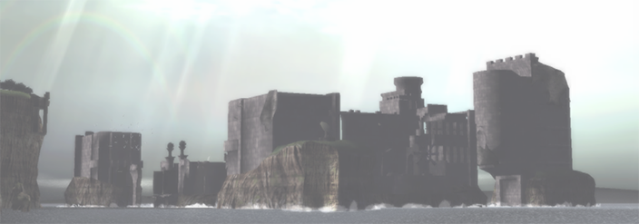
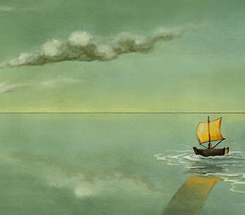
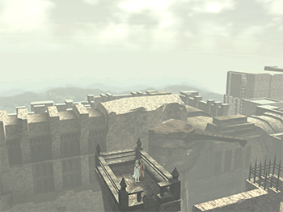
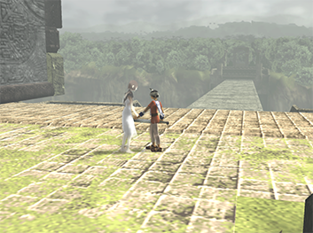
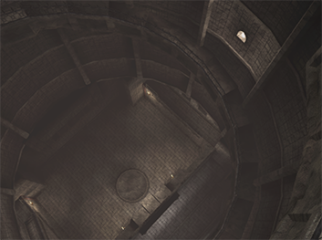
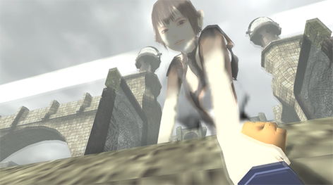

ICO

Spoilers have not been hidden for this writing.
Written 09/30/26
Introduction

Video games are distinct from other artforms due to how essential interaction is to their functionality. Even debated genres of games, like visual novels, depend on player input to control the pacing of a story.
Despite its long standing presence, control is often leveraged in modern gaming to boast technological advancement. You could control Mario in 1985, but he was unruly to move around.
When a game is remade or remastered most technical "quality of life" improvements involve player control. In the Final Fantasy VII and Final Fantasy VIII remasters, you can turn battles off or increase the game's speed. The Resident Evil remakes remove the tank controls, languid movement, and static cameras.
Just a few weeks ago footage for the upcoming The Legend of Zelda: Ocarina of Time remake was shown off, and they placed great emphasis on how much better the player can control Link and the camera.
I do not think any of these examples listed are bad improvements, but I do wonder how sanding off the edges affects the subtle parts of the experience.
RPGs have had a good level of control since their inception. You can control your party members in Final Fantasy and Dragon Quest II quite easily. These games even draw attention to how importation party control is through offensive confusion spells.
For an RPG, it is easier to allow the player full control during battles on a technical level. As the years have gone on, we have seen options to allow for characters to act on their own, but this is often done from the perspective of quality of life, auto battles and such.
In 2006, Persona 3 made a deliberate choice to have all party members, besides the player character, act on their own accord. Many players do not like this aspect of Persona 3.
Persona 3 is a difficult game to play without party control, but the independent party members served a purpose 1. Persona 3 wanted the characters to feel more real. They are people with lives, so they think their own thoughts during battle. The game goes so far as to not allow you to change their armor and weapons from your own menus. You have to go up to your teammate and talk to them. Menu based equipment was recontextualized to resemble handing off equipment to a friend.
This is all a drawn out example of an unfortunate quirk in the medium of video games.
There is no medium that can be "felt" in the way that video games are. Even a poor game with nothing to say and no immersion is an objectively tactile experience that is continued by our own will. No matter how little a player believes or respects the rules of the game they play, as long as they are playing they must abide by the rules of the game. As long as they play they must press the buttons that make the game function.
The deepness in which players must experience games makes all abrasions more present. As such, any game that wants to implore an artful approach at the cost of palatable gameplay is choosing a difficult path.
Yorda
ICO is a unique experience because it manages to circumvent many standards of its medium and genre. It is a single player cooperative experience, it is an action game with combat where your health means nothing, it is an emotional game focusing on a character you fundamentally and literally cannot understand. These are all difficult tasks and ICO is only able to pull any of them off through how well crafted Yorda is.
States of Interaction
The base gameplay of ICO involves placing Ico and Yorda into the proper positions, in the proper order, to advance each "level". That gameplay loop could describe nearly all games, the main draw and complication of ICO is Yorda.
At a high level, ICO's gameplay could be defined by the player's distance to Yorda. All actions in ICO revolve around Yorda, you hold her hand to keep her close, or you call for her to bring her closer to you. The only actions that sit outside of these ones are fighting and puzzle solving.
Puzzles in ICO exist with a singular end goal to bring Ico and Yorda to the end of a room. Ico can easily navigate the castle, the difficulty comes from keeping Yorda as close as possible. An area is only completed once Yorda opens the Idol Gates, the player gains nothing by rushing through a room without her.
Ico and Yorda will always have to be separated if the player chooses to fight the shadows, but victory against the shadows is defined by Yorda's wellbeing.
During battles shadows can attack Ico, but a fail state will never be entered as a result of Ico's health. Ico only matters in regards to obvious spatial issues, like falling out of the map, otherwise, the game is not centered around the player, so Ico's health is not a variable during combat.
Combat instead draws from ICO's mechanical theme of distance. Shadows attack Ico to create distance between the player and Yorda. If the distance becomes too far for too long, the shadows will take her away and the game enters its most present fail state.

Distance and failure are further linked due to the shadow's spawn conditions. Shadows appear during hard coded sequences, or when the has separated from Yorda and left her alone. Any state away from Yorda is designed to be anxious. If the player is away from Yorda, she will certainly be on their mind the whole time.
Yorda is the "home" position: any state spent away from Yorda will be bookended with returning to her. Puzzles, combat, and areas are only completed once Yorda and Ico are reunited. Equally, any state with her is more relaxed and comforting.
Yorda is also emphasized through ICO's narrative. She is the only comforting figure in an empty and cold space. All other characters appear only briefly and are untrustworthy and hostile.
For players not charmed by ICO, any attachment to Yorda will exist on a transactional level, but that does not change the importance placed on Yorda throughout ICO's systems and mechanics.
Communication
Ico, his tribe, and the Queen all speak a language similar to Japanese. The player is offered a translation any time this language is spoken. Yorda and the Queen speak an extremely warped version of Japanese, the player is never 2 given a translation of this language. The player can understand the main villain of the game, but they can never understand their trusted companion.

On a narrative level, Yorda's language helps characterize her abuse. Her mother has restricted all possible forms of communication and freedom from Yorda. Yorda lives locked away and alone; the only people she has any chance of running into speak a language she cannot understand.
From a more literal perspective: this quirk of ICO ironically makes it one of the few games where interactions between the player and the character are not abstracted. Communication in video games is coherent, but fundamentally restricted. The player can only interact when given the option to, and the options must be limited to exist at all. Most games cannot be played with complete communication between the player and characters.
If you were dropped into ICO, you would communicate to Yorda the same way that you do in game. The two of you cannot understand each other, you have no pens to draw symbols and diagrams, there are no translation tools around. If you are in an emergency in that kind of state, all you can do is guide and yell.
This mode of interaction excels because it is adopted by the player and Yorda equally. While playing, Yorda will explore puzzles herself and try to point out solutions to the player. In games, and especially puzzle games, it can be deeply insulting to cut off the player's attempts to solve a puzzle by giving them the answer. In ICO, though, Yorda is not text on the screen, she's well crafted character and her personhood is further built through these hints. She wants to escape and she is just as capable of puzzle solving.
The bilateral nature of ICO is its greatest asset. All its tricks with language and mechanics work so well because Yorda also has access to them. These moments are wonderful, but close inspection reveals ICO's most pressing shortcoming.
Door Key
Yorda is one of the best executed characters in her medium. Every aspect of ICO is designed to center her but, she is very slightly barred from full potential. While talking with a friend they described her as a tool, and that is an unfortunately apt descriptor.
The narrative and gameplay build up to Yorda standing against her mother and the shadows that taunt her, however this never happens because those triumphs are restricted to the player. The queen is fought while Yorda is not on screen, it is alarmingly not collaborative 3. Yorda never uses her own words and actions to face her mother, she gains independence only to become dependent on the player.
That is not to say that Yorda is passive. The roles in ICO can be reversed: Yorda can solve puzzles, lead Ico to safety, and extend her hand and grab Ico as he makes a terrifying jump. All of these moments are logical endpoints of ICO's interactive story, but Yorda is never able to truly stand against her mother.
ICO has never been afraid to set aside typical game design rules to craft an impactful gameplay experience; nevertheless, the game does not sway from being a power fantasy.
Architecture and World
Before wrapping up, it is important to take a step back and comment on the more surface level design of ICO.
ICO is visually striking. Bloom, harsh shadows, and muted colors would come to define the PS3 and XBOX 360 era of gaming. That era proved that they are delicate aesthetics to balance, but they look beautiful in ICO. ICO might be one of the most beautiful PS2 games, and it seems to understand that. The few amounts of water and foliage in the castle seem placed to reward the player.
Team ICO has always been exemplary in their use of space. Outside of the serendipitous puzzle boxes, the castle in ICO is a natural space that happens to pose exploration challenges to the player rather than a space solely designed for a player. The ruins perfectly mask intentional game design and build a strong aesthetic.
It is hard to give the player a sense of progression in a winding castle, but ICO is able to do so through its dedication to its own space. The player will see future "levels" from a distance, and they will also be able to look back at what they have already completed. Looking down and seeing a room you were in hours ago is very rewarding.
Beyond the grand scale, ICO's space also imparts dread. Every section of the castle can be viewed and explored, but each section will be as empty and hollow as the last. There is no furniture, there are no signs of life. The camera is extremely pulled back, making Ico and Yorda miniature in the space around them.
Yorda will often wander off and explore the castle herself. In these moments, it's hard to tell if she's seeing it all for the first time or if she's remembering places she had lived in long ago. Regardless, it is not pleasant to think of the time Yorda spent in her cage, seeing the state of the castle only makes that sinking feeling worse.

Yorda has been locked up in a cage in a castle only home to empty corridors and rotting bridges. There is no where to go and no one to talk to. Her home is a barrier like all other aspects of her life.
Puzzles and Platforming
ICO's puzzles give the player tasks, build the space, and actualize Yorda, though they are not groundbreaking as problems to solve.
The mechanics of ICO are where the game can turn aggravating to some players. Most puzzles involve climbing and jumping around platforms with a static camera, these actions are manageable, however there are a few sore spots.
There is an incredible moment during the first climax where the player and Yorda are separated and the following section, the sewers, must be done alone. The section is tonally and visually striking, but the gameplay feels undertested.
One section in particular involves jumping onto a thin cylindrical platform, maybe the only one in the entire game, and is followed by a chain swinging section. The sewers are dense and vertically layered, any misstep will send the player back a frustrating, although not punishing, distance.
This segment is the weakest in terms of gameplay; it is very unfortunate for it to be the section that connects the ICO's two emotional climaxes.
ICO
The shadows of each section will no longer terrorize Yorda and the player once the Idol Gates in a given area have been opened. The act of the gate opening will also vaporize any nearby shadows.
Often, it is most beneficial to the player to stand their ground and fight off all the shadows, but there are moments where the game places the player in the perfect emotional and spatial situation to grab Yorda's hand and run forward.
These are segements where ICO is taking full advantage of the relationship it has built between the player and Yorda. Cynically, it may be the desire to avoid a lengthy combat section, yet the catharsis at the end of each gate in one of these sections functions the same. It is important to emphasize that these are collaborative moments. You guide Yorda, but she is the one that opens the gates to free the both of you.

After opening the east and west gates the player, Ico, and Yorda will return to the front of the castle. Yorda will use up all of her power to open up the final gate, and you will all run across the bridge that separates the castle from the rest of the world.
When the bridge starts to split and separate Yorda from the player and Ico, many players will mindlessly jump across the bridge's gap to be with Yorda, the exit is in the other direction, but Ico escaping is not the point. Ico is only able to jump across the bridge because Yorda extends her hand to catch him.
ICO is an experience told with little words and numerous interactions. Yorda could have a textbox and give hints on how to proceed through a puzzle, or she can find her own way to communicate with the player. Yorda catching Ico's hand would be nothing of note anywhere else, but ICO designed itself so that action could be important.
Centuries of artistic and technological development are the only reason an experience like ICO can exist. That can be said of all modern media, but video games offer a special form of interaction, and ICO is using everything available to it to explore that concept. Surprisingly, ICO's greatest asset is restricting the defining feature of its medium.
A player can always interact with a video game. Interaction occurs when two objects communicate, a program will communicate with anyone if it is provided input, but interacting with characters is far more complex. A controlled character becomes an avatar, and two avatars interacting is a closed system within the player. ICO is able to circumvent this by never allowing Yorda to be an avatar.
Every important aspect of ICO exists outside of the player's direct access. Control is only granted when the player extends their hand and exists on Yorda's level.
The segregation between Yorda and the player allows for her actions to be read as her own, only in this state can ICO leverage itself. Only in this state can the player and ICO truly interact.
Credits
All other images are from my playthrough
Jacob Geller has a fantastic video on
Kevin the Storyteller's
Notes
1 My P3 experiences have been with Reload and Portable. (For the record... I played Portable because I own a PSVITA and I wanted to play the game on a handheld). I also played Persona 3 FES: The Answer and I did struggle with the combat. I think it was an interesting choice to make the party act independently, but I'm not trying to claim that the game's combat is perfect or that anyone who dislikes the auto party is wrong.
2 Excluding new game plus.
3 The segments without Yorda stress her importance, but I think it really was a missed call to not have her in the final fight. I will also take this note space to say there is a narrative reason for why Yorda is weak, but narrative justifications are not law. It's a piece of fiction, she can have a moment of strength.